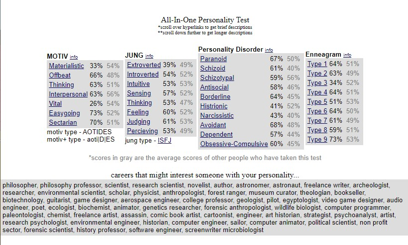
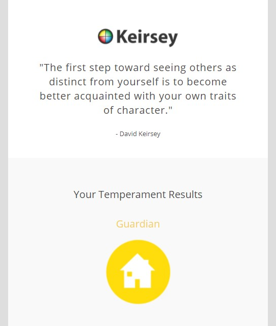

There is no passion to be found in playing small,
in settling for a life that is less than the one you are capable of living ~ Nelson Mandela
A few of the things that I enjoy doing are listed below:
Here is a list of things that I detest:(This list can be long but i will attempt to keep it as short as possible. You are Welcome!)


I am 50/50 when it comes to the validity of persoanlity tests mainly because I fail to believe that one test can determine so much about someone, especially since we are all different and specially made. However the other 50% believes that people have studied humans and the behaviour of humans long enough for it to be possible to determine certain things from a simple test.
In my individual case they do seem valid and accurate. I did both of the tests provided and the did seem to be quite accurate.